전자계산기제어산업기사 (2019-03-03 기출문제)
1과목: 전자회로
1. 부궤환(Negative feedback)의 4가지 형식 설명 중 틀린 것은?
- 입력전압이 출력 저항치를 제어하는 부궤환 형식을 사용하는 회로를 전압제어 전류원(VCIS) 이라 한다.
- 입력전압과 출력전압을 가지며 이와 같은 형식을 사용하는 회를 전압제어 전압원(VCVS) 이라 한다.
- 입력전류가 출력전압을 제어하는 부궤환 형식을 사용하는 회로를 전류제어 전압원(ICVS) 이라 한다.
- 보다 큰 전류를 얻기 위해 입력 전류를 증폭하는 부궤환 형식을 사용하는 회로를 전류제어 전류원(ICIS) 이라 한다.
(정답률: 74%)

2. 주파수 변조에 사용되는 프리-엠퍼시스 회로에 대한 설명으로 틀린 것은?
- 일반적으로 주파수 변조회로 앞 단에 설치한다.
- 간단한 R, C 소자로서도 구성이 가능하다.
- 주파수 특성은 저역여파기의 특성과 비슷하다.
- 신호대 잡음비를 높이기 위하여 사용한다.
(정답률: 59%)
3. 크로스오버(crossover) 일그러짐이 발생하는 전력증폭기는?
- A급
- B급
- C급
- AB급
(정답률: 70%)
4. 다음 여파기 회로의 주파수 특성은?
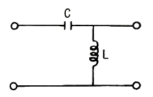
- 저역통과특성
- 고역통과특성
- 대역통과특성
- 대역저지특성
(정답률: 67%)
5. 진폭변조(DSB) 방식에서 변조도를 90%를 하면 피변조파의 전력은 반송파 전력의 약 몇 배인가?
- 1.1
- 1.4
- 1.6
- 2.1
(정답률: 55%)
6. 어떤 증폭기의 전압증폭도가 200일 때 전압이득은 약 몇 dB 인가?
- 25
- 35
- 46
- 86
(정답률: 75%)
7. 700kHz 인 반송파를 2000Hz 로 100% 진폭변조 하였을 때 점유 주파수 대역은?
- 2000 Hz ~ 700 kHz
- 700 Hz ~ 702 kHz
- 698 Hz ~ 702 kHz
- 698 Hz ~ 700 kHz
(정답률: 72%)
8. FET는 전압-가변저항(VVR)으로 사용할 수 있는데 이에 대한 설명으로 틀린 것은?
- 출력특성의 포화영역에서 행하여진다.
- Pinch-off 에 이르기 전의 출력 특성에서 행하여진다.
- VGS 전압에 비례한다.
- AGC 회로 등에 이용된다.
(정답률: 39%)
9. 다음 회로에서 VO 는? (단, R1 = R2 = R3 = R4 이다.)
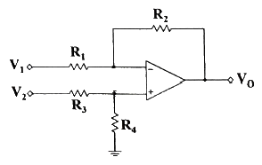
- VO = V1
- VO = V2
- VO = V1 - V2
- VO = V2 - V1
(정답률: 85%)
10. 연산증폭기에 관한 설명으로 옳은 것은?
- 입력단자는 반전 입력(+)과 비반전 입력(-) 두 개가 있다.
- 이상적인 연산증폭기의 주파수 대역폭은 매우 좁아 주파수의 선택도가 매우 뛰어나다.
- 이상적인 연산증폭기의 출력임피던스는 무한대의 값을 갖기 때문에 버퍼회로에 이용된다.
- 연산증폭기는 선형 집적회로로 동작 전압이 낮고 신뢰도가 매우 높다.
(정답률: 55%)
11. R=1 MΩ, C=0.1 μF인 RC직렬회로의 양단에 10V의 전압을 가한 뒤 R 양단의 전압이 3.68V가 되는 시간은 얼마인가?
- 1ms
- 3.68ms
- 100ms
- 638ms
(정답률: 59%)
12. 전원전압 9V, si 다이오드 5개와 부하 RL을 직렬로 연결하여 회로를 설계할 경우 부하 RL에 걸리는 전압은? (단, si 다이오드는 0.7V로 바이어스, 폐루프로 가정한다.)
- 0.7V
- 3.5V
- 5.5V
- 9V
(정답률: 77%)
13. 이상적인 다이오드는 무엇으로 나타낼 수 있는가?
- 전압원
- 전류원
- 저항
- 스위치
(정답률: 50%)
14. 다음 연산증폭기 회로에서 RL에 흐르는 전류가 5mA 일 때 RL 값은 몇 kΩ 인가?
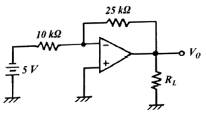
- 2.5
- 4
- 5
- 7.2
(정답률: 47%)
15. 전력 증폭기의 직류 공급전력은 20V, 200mA 이고, 부하에서의 출력전력은 1.8W 일 때, 이 증폭기의 효율은?
- 75%
- 80%
- 85%
- 90%
(정답률: 72%)
16. 트랜지스터의 차단과 포화영역을 사용하면 수행 가능한 소자로 가장 적합한 것은?
- 선형 증폭기
- 스위치
- 가변저항
- 다이오드
(정답률: 84%)
17. 궤환증폭기의 특징에 대한 설명으로 옳은 것은?
- 부궤환증폭기는 이득이 감소하고 회로가 안정하다.
- 부궤환증폭기는 이득이 증가하고 회로가 불안정하다.
- 정궤환증폭기는 이득이 증가하고 회로가 안정하다.
- 정궤환증폭기는 이득이 감소하고 회로가 안정하다.
(정답률: 80%)
18. 그림과 같은 단안정 멀티바이브레이터에서 트랜지스터 Q2가 ON(포화)상태에서 OFF(차단)상태로 되었다가 다시 ON상태로 되는데 걸리는 동작시간 T는?
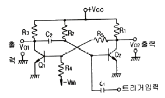
- T = R1C2 ln(2)
- T = C2R3 ln(2)
- T = C1R2 ln(2)
- T = C2R2 ln(2)
(정답률: 64%)
19. 사용 주파수가 높아짐에 따라 동일한 트랜지스터에서 주파수에 따른 이득이 감소하는 이유는?
- 접합용량에 의한 신호 누설 때문
- 반도체의 유전율이 변하기 때문
- 반도체의 불순물이 증가하기 때문
- 주파수에 따른 저항의 증가 때문
(정답률: 40%)
20. 다음 그림과 같이 VGS(off) = -4V, IDSS = 12mA 인 JFET가 있다. 일정한 영역에서 동작하기 위한 VDD의 최솟값은?
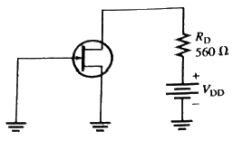
- -4V
- 4V
- 6.72V
- 10.72V
(정답률: 70%)
2과목: 디지털공학
21. 다음 JK 플립플롭 3개를 연결하여 구성된 회로에서 Cp를 입력으로 하고, A1, A2, A3을 출력으로 할 때 이 회로가 수행하는 기능은?
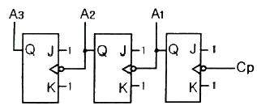
- 32진 카운터(counter)
- 16진 카운터(counter)
- 3 bit 2진 리플카운터(ripple counter)
- 4 bit 2진 리플카운터(ripple counter)
(정답률: 80%)
22. 다음 그림에서 세 입력(Z, Y, Z) 중 어떠한 입력이든 두 입력 이상이 정논리일 때 출력 또한 정논리가 되는 회로 설계 시 논리식은?
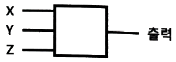
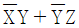
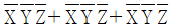
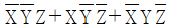
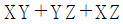
(정답률: 62%)
23. 다음은 무슨 회로인가?
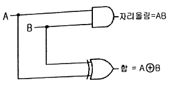
- 반가산기
- 전가산기
- 기수패리티회로
- 일치회로
(정답률: 94%)
24. 5개의 플립플롭을 사용하여 최대 10진수를 얼마까지 계수할 수 있는가?
- 31
- 49
- 50
- 63
(정답률: 91%)
25. 카운터에 대한 설명 중 옳지 않은 것은?
- 모든 플립플롭이 공통의 클럭 펄스에 의해서 동시에 동작하는 카운터를 동기식 카운터라 한다.
- 상향 또는 하향으로 카운트할 수 있도록 만들어진 카운터를 업다운 카운터라 한다.
- 링 카운터에서 각각의 플립플롭은 외부의 트리거원으로부터 신호를 받는다.
- 비동기식 카운터는 출력의 위상차가 거의 없이 일그러짐이 매우 적어 현재의 컴퓨터에 많이 쓰인다.
(정답률: 85%)
26. 니블(Nibble)은 몇 비트인가?
- 2비트
- 4비트
- 8비트
- 16비트
(정답률: 75%)
27. F(A, B, C, D) = B′C′+C′D+AB′+AD 일 때 F의 보수(F′)는?
- B′C′+AB′+AD
- A′C+BD′
- (B+C)(C+D′)(A+B′)
- AB+BC+CD
(정답률: 47%)
28. 다음 회로는 어떤 일을 수행하는가?
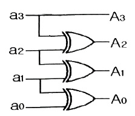
- 크기 비교
- 8진수 변환
- 0의 신호 검출
- 그레이코드 변환
(정답률: 85%)
29. D플립플롭이 셋업(setup) 시간 = 5ns, 홀드(hold) 시간 = 10ns, 전파(propagation) 시간 = 15ns 이다. 클럭에지가 발생하기 얼마전에 데이터가 입력되어야 하는가?
- 5ns
- 10ns
- 15ns
- 30ns
(정답률: 72%)
30. 다음 논리회로의 동작으로 옳은 것은?
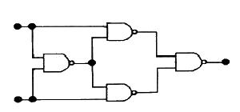
- EX-NOR
- EX-OR
- RS 플립플롭
- Half-Adder
(정답률: 62%)
31. 다음 논리회로를 간단히 한 결과로 옳은 것은?
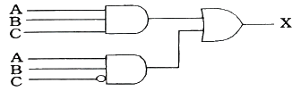
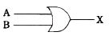
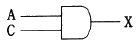
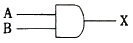
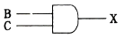
(정답률: 72%)
32. 다음 4×1 멀티플렉서를 이용하여 논리회로를 구현한 것으로 옳은 것은?
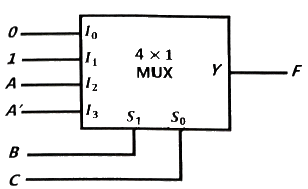
- F(A, B, C) = ∑(1, 3, 4, 6)
- F(A, B, C) = ∑(1, 3, 5, 7)
- F(A, B, C) = ∑(1, 2, 4, 7)
- F(A, B, C) = ∑(1, 3, 5, 6)
(정답률: 54%)
33. 16비트(bit)를 1워드(word)로 하는 코드(code)에서 op-code로 6bit를 사용하면 최대 몇 가지 인스트럭션(instruction)이 가능한가?
- 30
- 32
- 64
- 128
(정답률: 80%)
34. 모듈(modulo)-4로 계수기를 구성하기 위하여 요구되는 플립플롭의 최소 개수는?
- 1
- 2
- 3
- 4
(정답률: 73%)
35. 그림과 같은 회로의 명칭은?
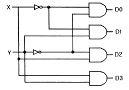
- 디코더
- 인코더
- 멀티플렉서
- 디멀티플렉서
(정답률: 65%)
36. 7-bit 코드로서 데이터 통신이나 마이크로 컴퓨터에 주로 사용하고 있는 코드는?
- Hamming코드
- BCD코드
- Gray코드
- ASCII 코드
(정답률: 85%)
37. 일련의 순차적인 수를 세는 회로는?
- 부호기
- 인코더
- 레지스터
- 카운터
(정답률: 93%)
38. 다음 기호의 논리게이트는?
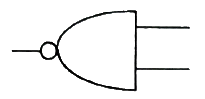
- NAND
- NOR
- AND
- XOR
(정답률: 77%)
39. 2개의 레벨 트리거 플립플롭을 직렬로 연결하며, 레이스(Race)현상을 방지하기 위한 플립플롭은?
- T
- RS
- M/S
- JK
(정답률: 90%)
40. 클록형 RS 플립플롭의 특성 방정식은?
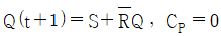
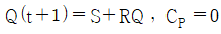
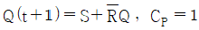
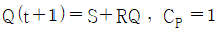
(정답률: 54%)
3과목: 마이크로프로세서
41. 온도를 측정하는데 사용되는 소자는?
- 서미스터(thermistor)
- 바리스터(varistor)
- 레지스터(register)
- 캐패시터(capacitor)
(정답률: 92%)
42. 간접 주소 지정 방식에 관한 설명으로 옳은 것은?
- 데이터 길이에 제약이 있다.
- 간결한 장점이 있으나 융통성이 부족하다.
- 최소 두 번 이상의 주기억장치 접근이 필요하다.
- 전체 메모리 크기가 N워드이면, 이 방식에 필요한 주소 크기는 log2N이 된다.
(정답률: 64%)
43. 전원이 차단되어도 데이터는 그대로 유지할 수 있고, 마이크로프로세서에서 직접 읽기 쓰기가 가능한 소자는?
- ROM
- RAM
- EEPROM
- Relay
(정답률: 75%)
44. DC 서보 모터에 대한 설명으로 틀린 것은?
- DC 서보 모터의 각도는 제어선에 전달되는 펄스의 존속 시간으로 정해진다.
- DC 서보 모터의 각도 제어방식을 PCM(Pulse Coded Modulation)이라고도 부른다.
- DC 서보 모터는 크게 제어회로와 모터, 기어 세트, 케이스 등으로 나뉜다.
- DC 서보 모터의 회전각은 펄스 파형의 주기에 따라 결정된다.
(정답률: 59%)
45. A/D변환기 중 속도와 정확도 등 종합성능이 좋아 가장 많이 사용하는 방식은?
- 병렬 비교 방식
- 카운터 비교기 방식
- 2중 적분 방식
- 순차 근이 방식
(정답률: 65%)
46. 인터럽트 루틴의 최초 명령이 저장된 메모리 주소가 저장된 장소는?
- 스택
- PC(프로그램 카운터)
- IR(인덱스 레지스터)
- 인터럽트 벡터
(정답률: 46%)
47. 비동기식 직렬 입/출력 인터페이스에 대한 설명으로 옳은 것은?
- 단위 데이터를 동일 시점에서 전송하는 방식이다.
- 변/복조 장치를 사용한 장거리 데이터 전송은 불가능하다.
- 단위 데이터 전후에 스타트신호와 스톱신호가 필요하다.
- 고속 데이터 전송이 필요한 입/출력 장치의 인터페이스에 적합하다.
(정답률: 71%)
48. A/D 변환기에서 아날로그 오차의 발생에 가장 큰 영향을 주는 것은?
- 계수기(counter)
- 비교기(comparator)
- 기준 전압의 리플(ripple)
- 래더(ladder) 회로의 저항
(정답률: 알수없음)
49. 직렬 전송속도가 56kbps(kilo bps)이면 분당 전송되는 수(KB : kilo byte)는?
- 240
- 420
- 560
- 640
(정답률: 67%)
50. 마이크로프로세서 시스템의 안전을 위하여 프로그래머가 마스크 할 수 없도록 되어 있는 인터럽트는?
- TIMER
- NMI
- MASK
- RTC
(정답률: 65%)
51. CPU가 프로그램을 수행하다 기존의 PC(Program Counter) 값을 임시 보관해야 할 경우가 생길 때 사용되는 임시 저장 공간은?
- 스택(stack)
- 버스(bus)
- 큐(queue)
- 클록(clock)
(정답률: 75%)
52. 어드레스가 A0~A14까지 있는 ROM의 메모리 용량(KB : kili byte)은?
- 8
- 16
- 32
- 64
(정답률: 30%)
53. XON/XOFF 프로토콜에 관한 설명으로 틀린 것은?
- 하드웨어 핸드셰이크 방식
- DTE와 DCE 사이에서 소프트웨어의 제어코드를 사용
- 전송 데이터의 흐름 제어
- XON은 전송 시작을 나타내며 XOFF는 전송 정지를 의미함
(정답률: 47%)
54. 다음 중 10진수 –4에 대한 2진수 표현방법으로 잘못된 것은?
- 부호와 절대치 : 1100
- 부호와 1의 보수 : 1011
- 부호와 2의 보수 : 1100
- 부호와 1의 보수 : 1010
(정답률: 65%)
55. 주기억장치에서 명령을 IR(Instruction Register)로 가져오기 위해 필요한 시간은?
- Seek time
- Run time
- Instruction time
- Cycle time
(정답률: 82%)
56. 어떤 CPU 내부에 32개의 레지스터들이 있다면 명령어의 레지스터 번호를 가리키는 필드는 최소 몇 비트로 구성되어 있는가?
- 4
- 5
- 6
- 32
(정답률: 93%)
57. 레지스터에 있는 값이 2진수 0000 0010 이었다. 이를 1비트씩 왼쪽으로 2번 산술시프트 시켰다면 결과 값은 10진수로 얼마인가?
- 2
- 4
- 8
- 10
(정답률: 92%)
58. SRAM의 특성이 아닌 것은?
- 하나의 2진 정보를 저장할 수 잇는 플립플롭들로 구성된다.
- 전원이 연결되어 있는 동안 저장되어 있는 정보를 유지한다.
- 사용하기 쉽고 읽기와 쓰기 시간이 짧다.
- MOS 트랜지스터 안의 콘덴서에 전하의 형태로 정보를 저장한다.
(정답률: 64%)
59. 인터럽트 종류 중 하드웨어적인 요인이 아닌 것은?
- 전원 중단
- 입출력 인터럽트
- SVC 인터럽트
- 외부 인터럽트
(정답률: 60%)
60. 데이터 이동 시 실행 속도가 가장 빠른 것은?
- 메모리-메모리
- 메모리-레지스터
- 레지스터-메모리
- 레지스터-레지스터
(정답률: 91%)
4과목: 프로그래밍언어
61. 다음 PC 어셈블리 명령 중 덧셈 명령이 아닌 것은?
- ADD
- ADC
- INC
- AND
(정답률: 65%)
62. C언어의 기억 클래스(class) 종류가 아닌 것은?
- auto
- entry
- static
- register
(정답률: 74%)
63. 기계어에 대한 설명으로 틀린 것은?
- 실행 속도가 빠르다.
- 2진수를 사용하여 데이터를 표현한다.
- 호환성이 없다.
- 유지보수가 용이하다.
(정답률: 73%)
64. 어셈블리어의 특징이 아닌 것은?
- 실행속도가 빠르다.
- 실행코드가 작다.
- 디버깅 작업이 고급언어에 비해 어렵다.
- 인간이 이해할 수 있는 쉬운 언어표현으로 명령어가 구성되어 있다.
(정답률: 77%)
65. C언어에 대한 설명으로 옳지 않은 것은?
- 이식성이 높은 언어이다.
- 시스템 소프트웨어를 작성하기에 편리하다.
- 다양한 연산자를 제공한다.
- 기계어에 해당한다.
(정답률: 67%)
66. 고급 언어에 대한 설명으로 옳지 않은 것은?
- 번역 과정 없이 직접 실행 가능하다.
- 사람 중심의 언어이다.
- 상이한 기계에서 별다른 수정 없이 실행 가능하다.
- 프로그램을 작성하거나 이해하기 쉽다.
(정답률: 82%)
67. 매크로 프로세서의 기능에 해당하지 않는 것은?
- 매크로 호출 저장
- 매크로 정의 저장
- 매크로 정의 인식
- 매크로 호출 인식
(정답률: 70%)
68. BNF 표기법에서 선택을 의미하는 기호는?
- ::=
- ＜ ＞
- { }
- |
(정답률: 67%)
69. 다음 ( )의 ㉮, ㉯에 알맞은 내용으로 옳은 것은?
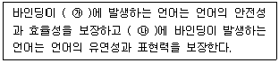
- ㉮ 실행시간, ㉯ 번역시간
- ㉮ 번역시간, ㉯ 실행시간
- ㉮ 정의시간, ㉯ 번역시간
- ㉮ 구현시간, ㉯ 정의시간
(정답률: 34%)
70. 고급 언어로 작성된 프로그램을 구문 분석하여 파서에 의하여 생성되는 결과물로서 각각의 문장을 문법 구조에 따라 트리 형태로 구성한 것은?
- 구조 트리
- 중간 트리
- 어휘 트리
- 파스 트리
(정답률: 88%)
71. C언어에서 왼쪽에 오른쪽 값을 나눈 나머지를 왼쪽에 대입하라는 대입연산자는?
- %=
- &=
- /=
- *-
(정답률: 86%)
72. C언어에서 식별자(Identifier)를 만드는 규칙에 대한 설명으로 가장 옳은 것은?
- 대소문자를 구별하지 않는다.
- 예약어는 식별자로 사용할 수 있다.
- 영문자, 숫자, _(underscore)만을 조합하여 만들 수 있으나, 숫자로 시작할 수 없다.
- +, -, % 등과 같은 특수기호를 포함할 수 있다.
(정답률: 77%)
73. 어셈블리어 명령 중 CMP 명령과 같이 보다 크거나 작은 대소 관계를 비교하지 않고, 논리적인 비교와 결과가 양수 또는 음수인지를 검사하여 상태 레지스터의 상태 비트를 설정하는 것은?
- TEST
- MOV
- RET
- JMP
(정답률: 62%)
74. C언어에서 “같지 않다”의 의미를 갖는 관계연산자는?
- &=
- %=
- $=
- !=
(정답률: 91%)
75. C언어에서 사용되는 출력문 “printf”에 사용되는 변환문자 중 “%u”의 의미는?
- 16진 정수
- 단일 문자
- 문자열을 가진 문자
- 부호 없는 10진 정수
(정답률: 55%)
76. 어셈블러를 2 Pass로 구성하는 가장 큰 이유는?
- 1 Pass 구조는 프로그램의 크기가 증가하여 유지보수가 어려움
- 1 Pass 구조는 메모리가 많이 소요됨
- Pass 1, 2의 어셈블러 프로그램이 작아서 경제적임
- 기호를 정의하기 전에 사용할 수 있어 프로그램 작성이 용이함
(정답률: 85%)
77. 객체지향언어에서 추구하는 개념과 가장 거리가 먼 것은?
- 추상화(abstraction)
- 연산(operation)
- 캡슐화(encapsulation)
- 다중기능(polymorphism)
(정답률: 67%)
78. 구조적 프로그래밍의 기본구조와 거리가 먼 것은?
- Selection Structure
- Difference Structure
- Iteration Structure
- Sequence Structure
(정답률: 54%)
79. 기억 장치의 한 장소를 추상화한 것으로서 이름, 유형, 주소, 값 등의 속성을 가지며, 프로그램이 동작하는 동안 값이 수시로 변하는 것은?
- 변수
- 상수
- 자료형
- 예약어
(정답률: 86%)
80. 서브루틴에서 자신을 호출한 곳으로 복귀시키는 어셈블리어 명령은?
- INCLUDE
- JMP
- RET
- SAHF
(정답률: 77%)
하지만, "입력전류가 출력전압을 제어하는 부궤환 형식을 사용하는 회로를 전류제어 전압원(ICVS) 이라 한다."는 틀린 설명이다. 부궤환의 형식 중 입력전류가 출력전압을 제어하는 형식은 전류제어 전류원(ICIS)이다.